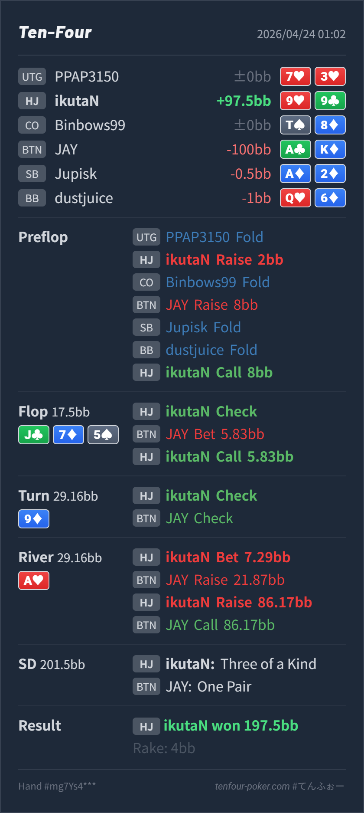

Preflop
良い9♥9♣ は HJ open も BTN 3bet への continue もかなり自然な pocket です。
主論点は、HJ 9♥9♣ で 2BB open して BTN 3bet に call したあと、turn で set になった J♣ 7♦ 5♠ / 9♦ / A♥ の river line をどう評価するかです。結論は、preflop open/call、flop call、turn check、river の small lead まではかなり自然で、見直すなら raise に対する 86.17BB の再レイズです。99 は river で十分強い continue ですが、ここではまず call で bluff と thin raise を残したい hand で、3bet value はやや薄いです。
9♥9♣A♣K♦J♣ 7♦ 5♠ / 9♦ / A♥HJ 2BB open はこの workspace の NL50 近似前提でも自然で、99 は BTN 3bet に対して主力の continue 候補です。今回の論点は preflop ではなく river の value の取り方です。J♣ 7♦ 5♠ で BTN の c-bet range には overpair、AJ/KJ、AQ/AK、TT-88 が広く残ります。99 はここで無理に raise する hand ではなく、medium showdown hand として call に置くのが自然です。9♦ で set になったあと、check-back を受けると BTN range はかなり cap しつつ、AK/AQ/AJ のような high-card 系や TT/QQ 付近を多く残します。river A♥ の small lead は、その check-back されやすい帯から value を回収しやすいです。99 は強い call 候補ですが、3bet に回すと bluff と多くの worse raise を落として、AA/JJ などの強い value に寄せやすくなります。9♥9♣A♣K♦2BB, CO fold, BTN raise 8BB, SB fold, BB fold, HJ callJ♣ 7♦ 5♠ / 9♦ / A♥5.83BB, HJ call7.29BB, BTN raise 21.87BB, HJ raise 86.17BB, BTN call9, Villain one pair A
良い9♥9♣ は HJ open も BTN 3bet への continue もかなり自然な pocket です。
J♣ 7♦ 5♠良い9♥9♣ は overpair ではありませんが、air よりかなり強く、showdown value を持つ call bucket です。
9♦良い
Hero は set で一気に上位です。
A♥ベットは良いが 3bet は薄め9♥9♣ は clear value ですが、raise を受けた後は まず call で十分強い hand に寄ります。
| 論点 | その場で起きがちな見え方 | どこがズレたか | 次回の基準 |
|---|---|---|---|
river の 99 3bet | set まで育っていて、しかも相手が raise してきたので最大を取り返したくなる | 99 は river でかなり強いですが、small lead -> raise に対してはまず call で bluff と thin raise を残したい hand です。3bet にすると AK/AQ/AJ や一部の curiosity raise が降りやすく、続行するのは AA/JJ 寄りになります。 | 強い made hand でも、raise を受けたら call で残る worse hand が十分あるか を先に確認する |
| turn check-back 後の raise range | turn を打たなかった range なので、river raise もそこまで強くないように見える | turn check-back で相手 range は cap しますが、raise という action まで進むと再び強くなります。cap したまま広く残っているからこそ、こちらは call で取り込む 方がEVを残しやすいです。 | check-back = 弱い と一段で読むのではなく、river で raise した時点で何が残るか まで更新して考える |
| ストリート | その時点の見え方 | 実ハンドの位置づけ | 評価 | その場の一手 |
|---|---|---|---|---|
| Preflop | HJ 2BB open は baseline より少し広い前提でも自然で、BTN の 3bet も AK/QQ+ だけでなく broadway 高打点まで含みます。 | 9♥9♣ は HJ open も BTN 3bet への continue もかなり自然な pocket です。 | 良い | open / call で問題ありません。 |
Flop J♣ 7♦ 5♠ | BTN の c-bet には overpair、AJ/KJ、AQ/AK、TT-88 がまだ広く残ります。 | 9♥9♣ は overpair ではありませんが、air よりかなり強く、showdown value を持つ call bucket です。 | 良い | ここは素直に call でよいです。raise は前のめりになりやすいです。 |
Turn 9♦ | flop bet-call 後も BTN には overpair、Jx、AK/AQ、TT 付近が残ります。 | Hero は set で一気に上位です。 | 良い | check で問題ありません。bet を混ぜてもよいですが、check で barrel と river 改善を待てます。 |
River A♥ | turn check-back で BTN には AK/AQ/AJ, TT/QQ, まれな slowplay がかなり残ります。A♥ はその high-card 群を改善させるので、small lead で拾いやすい runout です。 | 9♥9♣ は clear value ですが、raise を受けた後は まず call で十分強い hand に寄ります。 | ベットは良いが 3bet は薄め | 7.29BB の small lead は自然です。raise されたら 3bet より call を本線に置きたいです。 |
turn check-back 後の river small lead は、check-back されやすい one-pair や改善した high-card から回収するのにかなり有力です。worse raise をどれだけ残せるか を先に見た方が薄い 3bet を減らせます。強いから raise ではなく call で bluff と thin value を残したい hand か を切り分けると river の精度が上がります。AK/AQ を thin raise し、そのまま降りきれないこともあるので、今回の 3bet がそのまま大きな失点になるとは限りません。A-high 改善 hand を raise/call しすぎる と明確に読めるときだけ 3bet value を厚くしたいです。